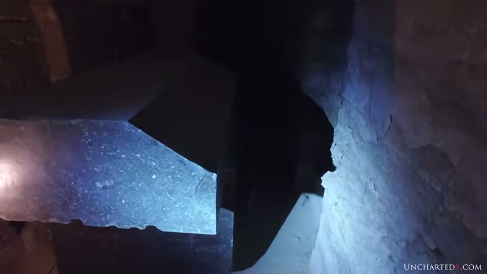
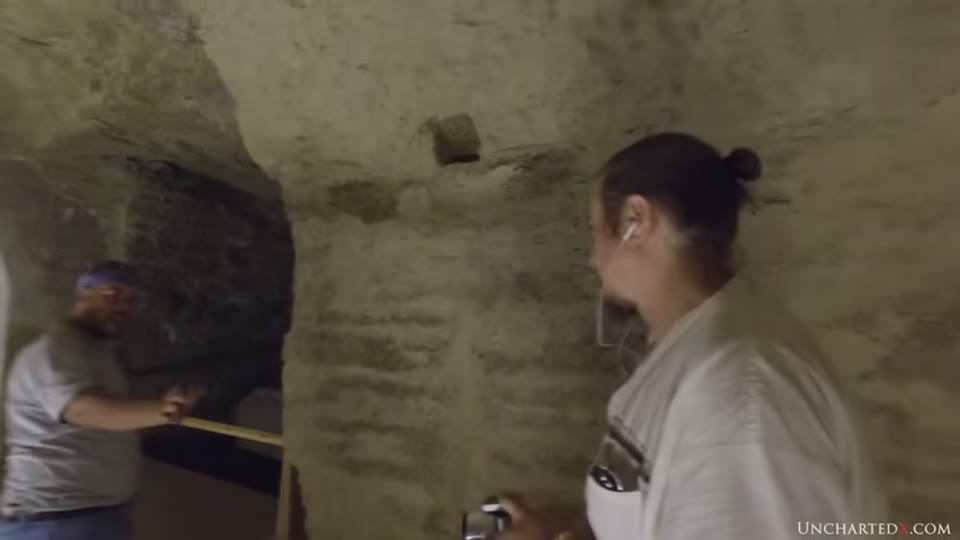
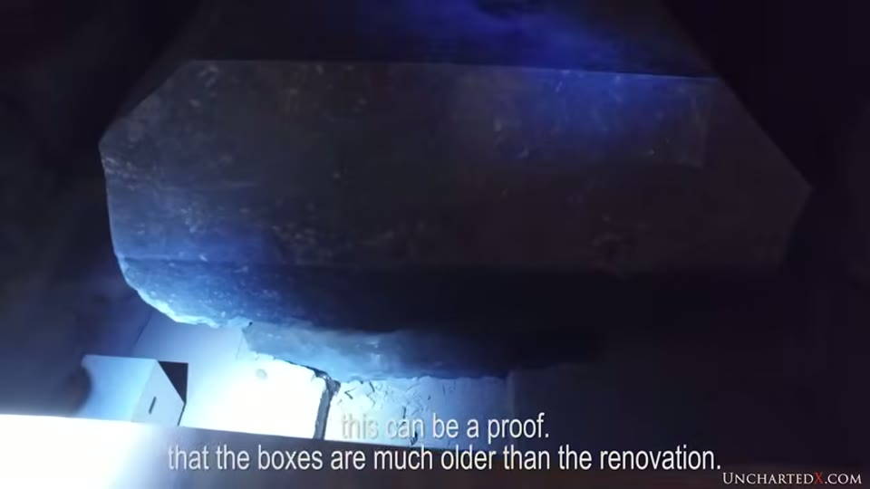
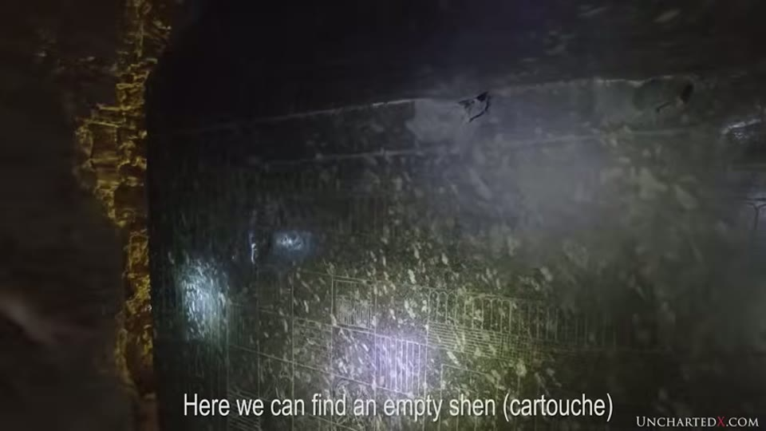
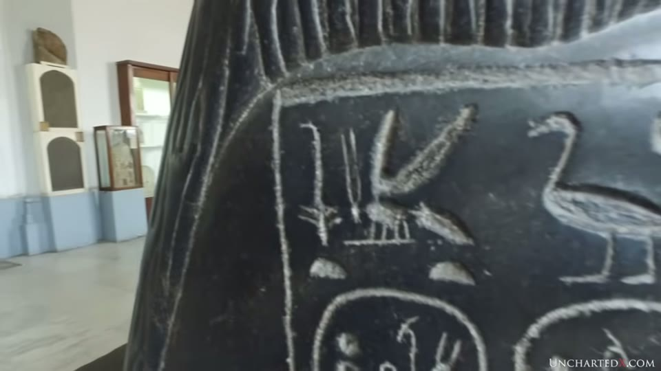
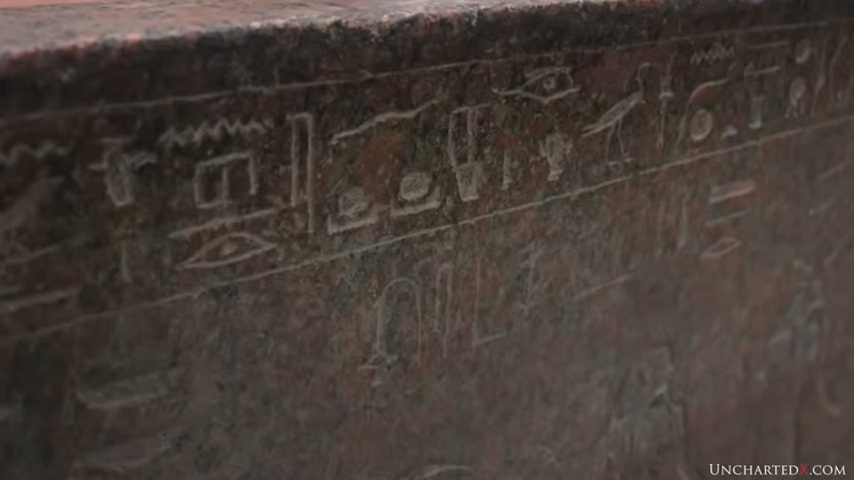
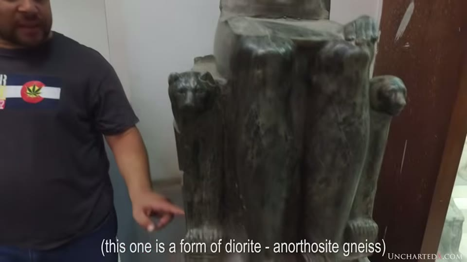

UnchartedX
Evidence of a lost Ancient Civilization at the Serapeum of Saqqara - Chapter 5
Ben · 41 min · watch on YouTube · summarised 2026-09-29
The video argues for two industries at the Serapeum, and it is built on a single observation anyone can check: on the Serapeum boxes the writing is tool-marked and unpolished, and the box is mirror-finished.
The disagreement is inside the video. Ben concludes two civilisations; Yousef Awyan, the guide standing next to him, says on camera that the evidence does not let you separate them.
What is down there
Twenty-four single-piece stone boxes with matching lids, up to 100 tonnes combined, set in sunken alcoves off a tunnel system cut straight through limestone bedrock — the longest passage more than 150 m, high enough and wide enough to drive a car down [00:41–01:33, 03:22–04:07]. Most are polished well enough to still reflect light.

A box in its sunken alcove, and the rough rock around it.
The tunnels are not masonry. Ceiling and walls are carved directly from the bedrock 10:23–10:29, which Ben treats as an achievement in its own right and links to the descending passage of the Great Pyramid as comparable precision tunnelling 04:15–04:41.

The tunnels are cut from bedrock, and the fit between box and tunnel is being measured on camera.
He also reports, with Awyan, passages at the end of the main gallery that continue beyond the lit and mapped area and have not been explored 05:09–08:35, and notes that when Auguste Mariette rediscovered the site in the 1800s every alcove was walled off and had to be broken into. His complaint that nobody has sent a camera or a robot down the open extensions is one of the more concrete asks in the genre.
The renovation argument
The evidence in this section is physical rather than interpretive 08:36–16:20. His framing: "Do you renovate a building at the same time that you build it?"
What he and Awyan point to:
- Plaster and limestone tiling added through the site during dynastic times, in places only the pattern of tiles scored into the plaster. What falls off the ceiling, Awyan notes on camera, is the plaster, not the stone.
- Floor tiles cut to fit around the boxes. You cannot slide a tile under a 70-tonne box, so the tiling was laid after the boxes were already standing where they stand.
- The tiles are recycled masonry from older sites, and they carry writing. The writing is upside down, and positioned where it could not be seen once a box was in the alcove 15:16–15:56.
That last detail is the one Ben presses hardest: text placed where nobody could read it is text being used as building material.

Floor tiles were laid around the boxes, so the boxes were already in place.
The argument the video is built on
Dynastic occupation is not in dispute, and Ben says so. The question is what the writing dates 16:20–16:46.

The inscriptions on the boxes themselves, including an uninscribed cartouche.
His case that the hieroglyphs are later than the boxes has three parts 20:53–21:20:
1. The glyphs carry tool marks. The boxes do not. 2. The glyphs are not polished, while everything else on the object is — including, he notes, fine detail like the inside of fingernails on statues, lotus motifs on boxes, and the ribs of a small sphinx. The original makers could evidently polish any surface, so if the writing were part of the original work it would have been polished too. 3. The technology shown by the writing does not match the technology shown by the object.


On the same object the writing is incised, irregular and unpolished while the surface around it is finished and reflective.
Awyan adds the observation from a stone carver's side 24:52–26:16: he has seen power-tool marks on statues, boxes and slabs, but "I haven't seen it yet in any writings" — including in the finest dynastic relief work, which he admires.
Against that, the tool marks Ben says are on the objects 26:26–28:51: an overcut beside a seated statue in the Cairo Museum — the narration calls the stone "basically diorite", while the editor's own on-screen caption specifies anorthosite gneiss, which is not the same rock and not the dolerite the pounding explanation turns on;

The stone of the statue used as the example, as the video's own caption identifies it.
a tube drill mark between the statue's feet, which he says is common on statues; tube drill holes in a museum box; drill marks in granite and circular saw marks on basalt at Abusir; overcuts in the basalt floor tiles beside the Great Pyramid; marks on the granite box in the King's Chamber; and an abrasive mark on the bottom corner of the large Serapeum box.
Both men state the pattern as universal rather than as a tendency. Ben: "you see this again and again and again everywhere you look around the oldest parts of ancient Egypt — when it comes to objects that have been made with high technology, the writing that is on those objects never reflects the same level of technology" 25:04–25:20. Awyan, of the finest dynastic relief he knows: "I haven't seen it yet in any writings" 26:16.
The logistics
A second, independent line 10:29–14:05. The largest boxes are less than a foot narrower than the tunnel. Getting a 50–100 tonne box along the tunnel and then lowered and centred into a sunken alcove is the problem, and Ben's view is that it would be easier to empty the chamber, lower the box from above and rebuild the ceiling — which is not what the site looks like.
The wooden-sled explanation is addressed directly: there is no trace of a sled or anything like it under the box abandoned in transit in one of the tunnels, which he treats as the natural place such evidence would survive. On camera he and Awyan work through the crew size a sled would need at 200 kg a person and reach roughly 250 people for a 50-tonne box, then look at the width of the tunnel.
He grants the modern comparison in both directions: we could do it today with hydraulics and funding; we could not have done it 150 years ago — Mariette blew a lid off with dynamite because the alternative was not available 11:49–12:08.
Where the two of them part company
Ben's conclusion is two civilisations separated by cataclysm — a highly capable older culture, global in footprint, building for function, largely destroyed at the Younger Dryas, its survivors and works inherited by the dynastic Egyptians who found them sacred 29:38–35:59.
Awyan does not go there, and says so on camera [26:16–26:26, 31:16–32:20]. His points:
- "Never underestimate dynastic Egyptians."
- The statuary that carries dynastic identity does show tubular drill and circular saw marks — "that means we cannot separate the pyramid builders from them."
- What the evidence supports instead, in his view, is extending the timeline: more intermediate periods, more rise and fall, a cataclysm, inheritance, and rebuilding — "if you inherit lots, then it will be much easier to develop again."
That is a materially different reading of the same objects: one continuous but interrupted tradition rather than two separate civilisations. The video does not resolve it and neither does this entry.
Ben also marks his own conclusion section as speculation before he starts it: "I am by no means a professional, I am just an interested amateur… effectively all I'm doing is shouting commentary from the sidelines" 19:27–19:52.
What you can check yourself
- The glyphs against the box, in any photograph of the Serapeum. Whether the writing is unpolished and tool-marked while the surface beside it is mirror-finished is the whole argument, and it is visible without instruments.
- The same test anywhere else. The claim is explicitly universal — statues, boxes, columns, obelisks, in museums worldwide. A single object where the writing is polished to the same standard as the surface would break it.
- The upside-down inscriptions on the floor tiles, in the alcoves where they are exposed.
- Tile-to-box fit. Whether floor tiles are cut around the boxes rather than running under them.
- The box abandoned in the tunnel, and whether anything lies beneath it.
- The open passages at the end of the main gallery, which are not on the site maps.
What the video does not settle
- The universal claim is asserted from experience, not surveyed. "You see this again and again everywhere you look" and "I haven't seen it yet in any writings" are both reports of not having found a counter-example. No count, no sample, no catalogue search. The prediction is good; the evidence offered for it is that two people have not noticed otherwise.
- No interval is given between the boxes and the renovation. The tile evidence is offered for the boxes being older; the on-screen subtitle says "much older". How much older is not addressed, and nothing in the video measures or bounds the gap.
- The presenter and the guide reach different conclusions and the difference is not worked through. Awyan's objection — that the statues carry power-tool marks and dynastic identity, so the two cannot be separated — is a direct problem for the two-civilisations reading, and it is left standing next to it rather than answered.
- No tool, no date, no mechanism. The marks are offered as evidence of power tools; no tool has been found, no process is demonstrated, and nothing in the video dates any box.
- The closing section leaves the evidence entirely. Global footprint, encoded constants, Hamlet's Mill, Moses and Jesus as celestial ages: none of it follows from the Serapeum and none of it is argued here. Ben flags the section as speculation, which is why it is recorded rather than weighed.
- The footage cannot carry the argument. The Serapeum sequences are hand-torch video in an unlit chamber, and most of the in-situ evidence — the tile-to-box junction, the inverted inscriptions, the marks on the box corner — is too dark or too blurred to judge from the frames. The museum footage is well lit and the statue comparison is legible; the underground evidence, which is the evidence the argument is actually about, largely is not. Four Images-needed rows were struck out for this reason.
- The sled evidence is one object. The claim that no trace of a sled was found rests on the single box abandoned in the tunnel. No excavation, survey or report is cited for it.
Names heard rather than confirmed
No caption track exists for this channel, and this 2019 transcript is poor — the site's own name arrives as "era p.m.", "Sarah pian", "syrup iam" and "Sarah PM". Corrected from context: Serapeum, Saqqara, Auguste Mariette (also rendered "Marriott"), Yousef Awyan, Abusir and Abu Ghurab, Ramesses II, the Osireion (arriving as "the Assyrian") and the Osiris Shaft ("cyrus shaft"). The alabaster object at Abu Ghurab is named in a form this entry could not resolve and is not identified here.